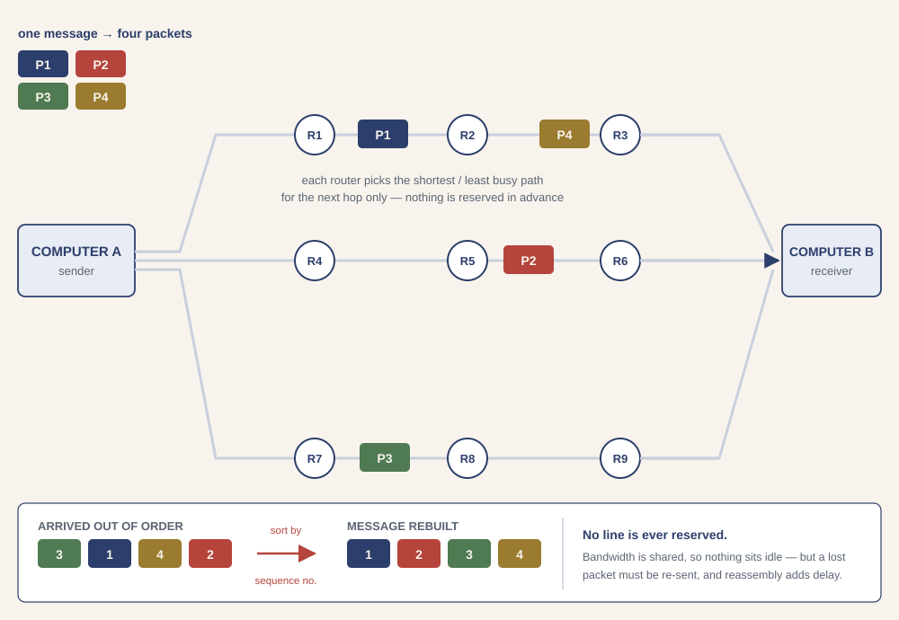
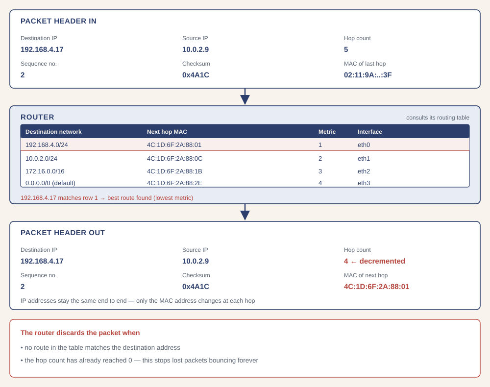

Circuit switching
What is circuit switching?
- Circuit switching sets up a dedicated channel (circuit) between sender and receiver that lasts for the whole connection — the line is effectively tied up until the call ends
- This is how a traditional telephone call works
- Every message follows the same single route, in the order it was sent
- There are three stages in every circuit-switched connection:
- Establish the circuit between sender and receiver
- Transfer the data (analogue or digital, usually bi-directional)
- Terminate the connection when the transfer is complete
Advantages
- The circuit is dedicated to that single transmission only
- The whole bandwidth is available to the user
- The data transfer rate is faster than with packet switching
- Data (frames) arrive in the same order they were sent
- A packet cannot get lost — all of them follow one route in sequence
- It works better than packet switching for real-time applications (voice, video)
Disadvantages
- Not flexible — empty frames are still sent, and only a single dedicated line is used
- Nobody else can use the circuit, even when it is idle
- The circuit is always reserved, whether or not it is being used
- If there is a failure on the dedicated line there is no alternative route — the call is dropped and must be re-established
- Dedicated channels require greater bandwidth
- The time needed to establish the link can be long, before any data moves
Where it is used
- Public telephone networks (PSTN)
- Private telephone networks
- Private data networks
Packet switching
What is packetising?
- Packetising is the process of dividing a large message into smaller, manageable units called packets
- Each packet can be transmitted individually across a network
Structure of a packet
- Each packet typically contains:
- Header – contains control information such as:
- Source IP address – who sent the packet
- Destination IP address – where it’s going
- Sequence number – used to reassemble packets in the correct order
- Hop count – how many more routers the packet may pass through
- Protocol – e.g. TCP or UDP
- Packet length – the size of the packet
- Checksum – used for error checking
- Payload – the actual data being sent
- Footer (trailer) – may include extra error-checking or control information
- Header – contains control information such as:
What is packet switching?
- Packet switching is a communication method where data is broken into packets and sent across a shared network
- Each packet may take a different path to the destination and is reassembled on arrival
- Each packet follows its own path; the route chosen depends on the number of datagrams waiting to be processed at each node (router), and the shortest available path is selected
- Packets can therefore reach the destination in a different order from the one in which they were sent
Advantages
- No need to tie up a communication line
- Efficient use of network bandwidth — capacity is shared, not reserved
- Failed or faulty lines are overcome by re-routing packets
- Easy to expand traffic usage
- Users are charged only for the duration of the connectivity, not the distance
- High data transmission rates are possible
- Always uses digital networks, so digital data is transmitted directly
Disadvantages
- The protocols are more complex than those for circuit switching
- If a packet is lost, the sender must re-send it, which wastes time
- Does not work well with real-time data streams (VoIP, video calls)
- The channel has to share its bandwidth with other packets
- There is a delay at the destination while packets are reassembled
- Needs large amounts of RAM to handle large volumes of data
Lost packets and error checking
- Left alone, a lost packet can keep ‘bouncing’ between routers and never arrive — eventually the network clogs up
- Hop count: each packet may only be forwarded a finite number of times; the hop number decreases by 1 at every router, and the packet is deleted when it reaches 0
- Checksum: calculated and added to the header by the sender, recalculated at the destination; if the two values differ, a request is made to re-send the packet
- Priority value: sometimes added to the header; a high priority value selects a higher-priority queue at the router

The function of a router
What a router does
- A router connects different networks and forwards packets towards their destination
- When a packet arrives, the router:
- Examines the packet header — specifically the destination IP address
- Compares it with the entries in its routing table
- Selects the best route (lowest metric / fewest hops) to the destination network
- Decreases the hop count by 1
- Replaces the MAC address in the frame header with the MAC address of the next router
- Forwards (hops) the packet out of the correct interface
- The IP addresses stay the same from end to end — only the MAC address changes at every hop
- A router discards a packet when:
- no route in the table matches the destination address, or
- the hop count has already reached 0
Routing tables
- A routing table contains the information needed to forward a packet along the shortest or best route to its destination
- A routing table includes:
- Number of hops to the destination
- MAC address of the next router the packet will be forwarded to
- Metrics — a cost assigned to each route, so the most efficient path can be found
- Network destination (network ID) or pathway
- Gateway — the next hop through which the target network can be reached
- Netmask — used to generate the network ID
- Interface — which locally available interface reaches that gateway

Circuit switching vs packet switching
| Feature | Circuit switching | Packet switching |
|---|---|---|
| Route | Must be set up before transmission begins | No route is set up in advance |
| Path | A dedicated transmission path is required | Path is shared with other users’ packets |
| Routing of data | Every frame follows the same route | Each packet may take a different route |
| Order of arrival | Always in the correct order | May arrive out of order — reassembled at the destination |
| Bandwidth | The whole bandwidth of the channel is used | Bandwidth is shared between packets |
| Idle time | Bandwidth is wasted when nothing is being sent | Idle capacity is used by other packets |
| Efficiency | Low — resources are tied up for each communication | High — uses bandwidth as needed |
| Reliability | If the path fails the call is dropped | Packets are re-routed around a failure |
| Scalability | Less scalable — more users need more physical paths | Highly scalable — handles large volumes and many users |
| Suitable for | Real-time communication (voice calls, video conferencing) | Emails, web pages, file downloads |
Do not write about “the speed of data transmission” in a packet/circuit switching answer — it earns no marks and in some questions is explicitly excluded. Talk about bit rate or bandwidth (bits per second) and the efficiency of the transmission instead.
How packet switching is used to pass a message across a network
- This is the syllabus requirement “Explain how packet switching is used to pass messages across a network, including the internet” — practise writing it as a numbered sequence
Worked answer: downloading a web page
- The web page is divided up into data packets
- Each packet has a header, which includes the IP address of the destination
- At each router the header is checked against the values stored in the routing table
- … to determine which router the packet needs to be sent to next (hopped)
- … the MAC address of the next router is added to the packet header
- The hop value is checked to see whether it equals zero; if it does, the packet is deleted
- Each packet may go by a different route
- The destination computer reassembles the packets, building up the final web page
Worked answer: why a video call performs badly
- Poor performance you might expect:
- Picture and sound may not be in synchronisation (packets arrive at different times)
- Video is not continuous — pauses caused by the time delay in reassembling packets
- Degraded quality of sound and video, caused by competing traffic on the communication lines
- Possible drop-out — packets take different routes, so packets can be lost
- How circuit switching would improve it:
- Only one route is used, so all packets arrive in the correct order
- A dedicated channel means the full bandwidth is available
- There is no loss of synchronisation